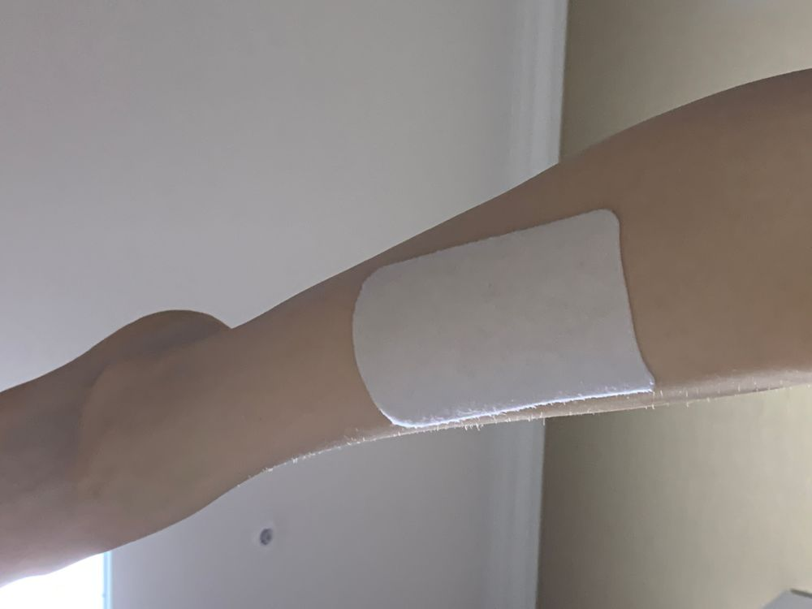
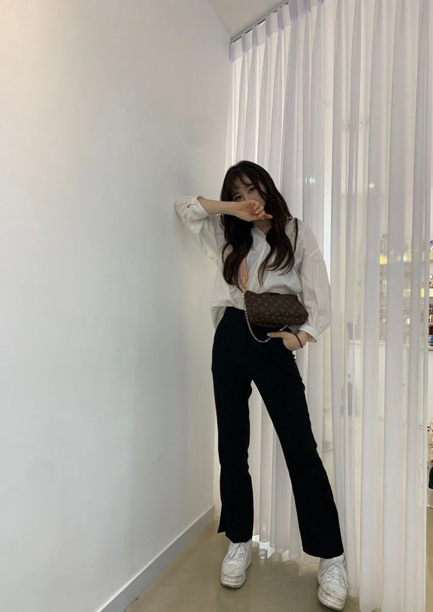

8.2km의 후유증
ㅎㅎ
나는 푼수다
엄마~🎶 엄마~🎶 정강이가 아파요🎵

요즘 노래를 들으면
와 어떻게 이런 표현을 하지?? 싶은 가사랑
평소에 자주 쓰는 말인데 내가 가사쓸 때는
이런 느낌의 가사가 왜 생각이 안나는 거지?
라면서
가만가만 생각하게 되더라구요
뭔가 난 항상 서정적이고 조금 진부한 것 같아서
돌려 말하지 않는 느낌의 가사를 섞어보려
애를 쓰고 있어요ㅋㅋㅋㅋㅋㅋ
그렇다고 내 서정적인 가사가
뭔가 울림을 주거나 '헉'하는 부분도 없기도 하구 ㅎㅎ
위뤈 아튀스튜적인 생각을 하고 있다니
ㅎㅎ 장하다 이채연 날아라 이채연
전 더더더 경험도 쌓고 공부하고
연구해서
저의 작사한 여러 가사들이
경력이 될 수 있게 노력할거예요
물론 단기적 생각
절대 아닙니다
난 뭐든지 다 길게 보는 편🤔
